Suspension / Drive
84 parts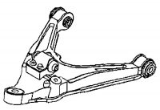
Out of stock008 :2003 - 2017 Dodge Viper SRT10 Lower Right Front Control Arm - 05290691AC
Part # 05290691AC 5290024AA
$900.00
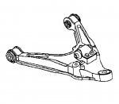
009: 1997 - 2002 Dodge Viper Lower Left Front Control Arm - 04709297
$349.00
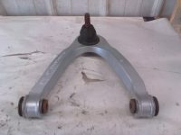
03-10 VIPER RF UPPER CONTROL ARM 05290276AC RH FRONT CONTROL ARM
Part # 05290276AC
$499.00
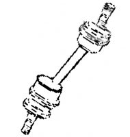
Out of stock1992 - 1995 Dodge Viper RT/10 Front Sway Bar Link - 04643047
Part # 04643047
$200.00

1992 - 1995 Dodge Viper RT/10 Left Front Upper Control Arm - 05073475AA
Part # 05073475AA 04642077
$250.00
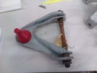
1992 - 1995 Dodge Viper RT/10 Right Front Upper Control Arm - 05073474AA
Part # 05073474AA 0462076
$549.00
 Out of stock
Out of stock1992 - 2002 Dodge Viper Front Tie Rod Outer End Assembly - 52037501
Part # 52037501
$100.00
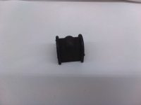
1992 - 2002 Dodge Viper Rear Sway Bar Bushing - 04643031
Part # 04643031
$25.00
 Out of stock
Out of stock1992 - 2002 Dodge Viper REAR Tie Rod Outer End Assembly - 52037501
Part # 52037501
$100.00

1992 - 2010 Dodge Viper Front Stabilizer Bar Bushing - 04643004
Part # 4643004
$59.00
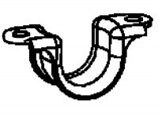
1992 - 2010 Dodge Viper Front Stabilizer Bar Grommet Retainer - 04404219AB
Part # 4404219AB
$6.00
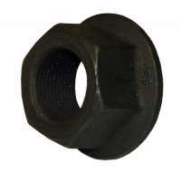
1992 - 2010 Dodge Viper Hub Hex Flange Nut M22x1.25- 06502294
Part # 06502294
$12.95
 Out of stock
Out of stock1992 - 2010 Dodge Viper Rear Wheel Bearing Gasket - 4848171
Part # 4848171
$10.00
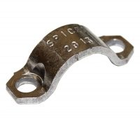
1992 - 2013 Dodge SRT Viper Driveshaft U-Joint Clamp - 04428723
Part # 04428723
$12.00
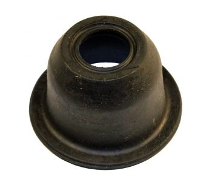
1992 - 2017 Dodge SRT Viper Lower Ball Joint Seal - 52006404
Part # 52006404
$39.00
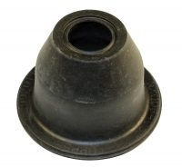
1992 - 2017 Dodge SRT Viper Upper Ball Joint Seal - 52006405
Part # 52006405
$37.00

1992 - 2017 Dodge Viper Fog Service Plug Trunk Seal Shock - 04708057
Part # 04708057
$35.00
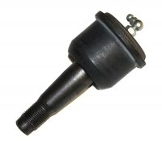
Out of stock1992 - 2017 Dodge Viper Lower Ball Joint - 04848174 5290860aa
Part # 4848174AB
$85.00

1992 - 2017 Dodge Viper Rear Hub & Bearing Assembly - 04848716
Part # 04848716
$985.00
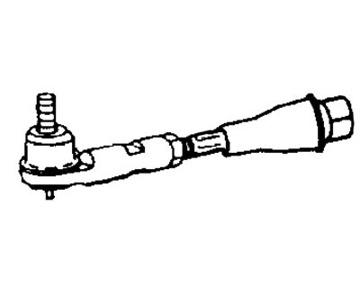
Out of stock1992-1995 Dodge Viper RT/10 Rear Toe Link Assembly - 04643911
Part # 04643911
$325.00
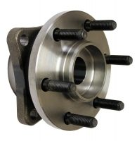
1996 - 2000 Dodge Viper Front Hub & Bearing Assembly - 04763182 04763183
Part # 4763182 04763183
$500.00

1996 - 2000 Dodge Viper Left Rear Knuckle - 04709281
Part # 04709281
$625.00
 Out of stock
Out of stock1996 - 2000 Dodge Viper Right Rear Knuckle - 04709282 4848714 Spindle
Part # 04709282 4848714
$599.99
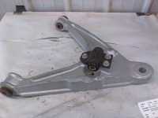
1996 - 2000 Viper Lower Left Rear Control Arm - 04709325
Part # 04709325
$325.00
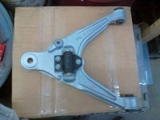
1996 - 2000 Viper Lower Right Rear Control Arm - 04709324
Part # 04709324
$325.00

1996 - 2002 Dodge Viper Front Stabilizer Bar - 04848105
$358.00
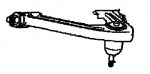
1996 - 2002 Dodge Viper Left Front Upper Control Arm - 04709292
$449.00
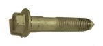
1996 - 2010 Dodge Viper Control Arm Strap Bolt - 06503357
$2.00
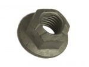
1996 - 2010 Dodge Viper Control Arm Strap Nut - 06101696
$4.00
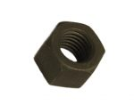
1996 - 2010 Dodge Viper Hex Jam Nut - 06100219
$4.00
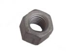
1996 - 2010 Dodge Viper Hex Link Nut - 06502556
$4.00
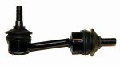
1996 - 2010 Dodge Viper Rear Sway Link - 04709289 - 68231479AA
Part # 4709289
$280.00
 Out of stock
Out of stock1996 - 2010 Dodge Viper Shock Upper Mounting Bolt - 06504189
Part # 6504189
$9.00

1996 - 2010 Dodge Viper SRT10 Rear Trailing Link - 04763159AC TOE ROD REAR INNER TIE ROD
Part # 04763159AC
$399.00
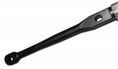
1996 - 2010 Dodge Viper Toe Link Rod - 04709309
Part # 04709309
$90.00
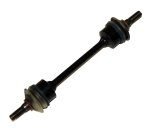
1996 - 2017 Dodge Viper Front Sway Bar Link - 68231477AA
Part # 68231477AA
$320.00
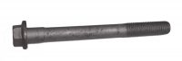
1997 - 2010 Dodge Viper Rear Shock Lower Mounting Bolt - 06102081AA
Part # 06102081AA
$35.00
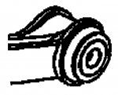
1997 - 2013 Dodge SRT Viper Lower Control Arm Bushing - 04848050
$65.00
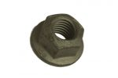
1997 - 2017 Dodge Viper Shock Mounting Lock Nut - 06502698
$4.00

1999 - 2005 Dodge Viper Upper Rear Ball Joint - 52088808AB
$52.00

2003 - 2010 Dodge Viper Left Rear Knuckle & Ball Joint Assembly - 5134995AA 4848716
Part # 5134995aa
$900.00

2003 - 2010 Dodge Viper Left Rear Knuckle - 05134995AA BARE
Part # 05134995AA
$900.00
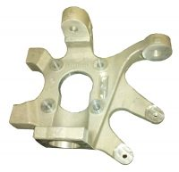
2003 - 2010 Dodge Viper Right Rear Knuckle - 05134994AA
Part # 05134994AA
$2,995.00
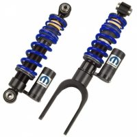
2003 - 2010 Dodge Viper SRT10 2-Way Adjustable ACR Shock System - P4510951
$5,500.00
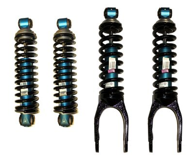
2003 - 2010 Dodge Viper SRT10 Coil Over Shock Set - 05181434AA 05181432AA
$1,265.00

2003 - 2010 Dodge Viper SRT10 Front Stabilizer Bar - 05290035AB
$209.00
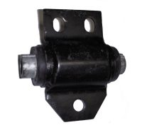
2003 - 2010 Dodge Viper SRT10 Rear Control Arm Strap & Bushing - 04848052AB
Part # 04848052AB
$62.00

2003 - 2010 Dodge Viper SRT10 Rear Shock 05181434AC
Part # 05181434AA
$1,750.00
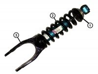
2003 - 2010 Dodge Viper SRT10 Rear Spring 05181440AA
Part # 05181440AA
$155.00
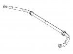
2003 - 2010 Dodge Viper SRT10 Rear Stabilizer Bar - 05181438AA
$215.00

2003 - 2010 Dodge Viper SRT10 Tie Rod End - 05290168AC
Part # 5290168AC
$54.00

2003 - 2010 Dodge Viper SRT10 Upper Control Arm Mounting Bolt - 06502046
Part # 06502046
$3.00
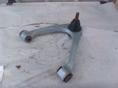
2003 - 2010 Dodge Viper Upper Rear Control Arm - 05290117AC
Part # 05290117AA
$499.00

2003 - 2013 Dodge SRT Viper Control Arm Cam Bolt - 6036525AA
Part # 6036525AA
$50.00
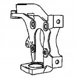
2003 - 2017 Dodge Viper SRT10 Left Front Knuckle - 05290031AC
$1,100.00
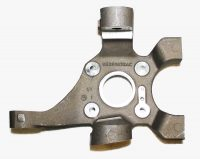
2003 - 2017 Dodge Viper SRT10 Right Front Knuckle - 05290030AC
Part # 05290030AC 68272306AA
$1,725.00
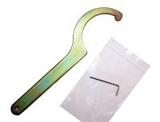
Out of stock2008 - 2010 Dodge Viper ACR Shock Adjustment Tool - 5181441AA
Part # 5181441AA
$38.00
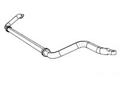
2008 - 2010 Dodge Viper SRT10 ACR Front Stabilizer Bar - 05181444AA
Part # 05181444AA
$252.00
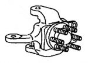
96 - 00 Dodge Viper Left Front Knuckle - 04709303
$325.00
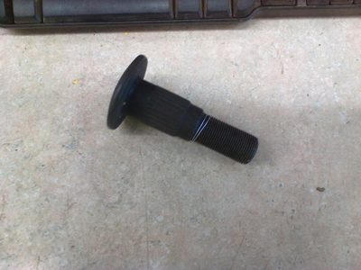
Out of stock96-00 VIPER FRONT BOLT CENTER HUB 04709307
Part # 4709307
$65.00
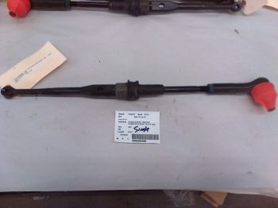
96-02 VIPER REAR TOE LINK - INNER ONLY - 4709309 52037501 4763159AC
Part # 4709309 52037501 4763159AC
$399.00

03-10 VIPER *PAIR*REAR TOE LINK, INNER TIE ROD 4763159AC 4709308 5290168AC
Part # 4763159AC 4709308 5290168AC
$775.00
1992 - 1995 Dodge Viper RT/10 Left Front Lower Control Arm - USED
$880.00
1992 - 1995 Dodge Viper RT/10 Right Front Lower Control Arm - USED
$500.00
1996 - 2000 Dodge Viper Right Front Knuckle - 04709304 4709302
$499.00
1996 - 2010 Dodge Viper Front Wheel Bearing Gasket - 4848166
Part # 4848166
$24.00
2001 - 2002 Dodge Viper Left Rear Knuckle - 5086713aa Spindle
$795.00
2001 - 2002 Dodge Viper Right Rear Knuckle - 5086712aa Spindle
$895.00
2001-2002 Dodge Viper Left Front Knuckle - 5264871aa Spindle w/ABS
$595.00
2001-2002 Dodge Viper Right Front Knuckle - 5264874aa Spindle w/ABS
$500.00
2003 - 2006 Dodge Viper SRT10 Take-Off Coil Over Shock Set
$1,095.00
2003 - 2010 Dodge Viper SRT10 Lower Left Front Control Arm - 05290691AC
$600.00
2003 - 2010 Viper Lower Right Rear Control Arm - 05290118AB
Part # 05290118AB
$475.00
2003 - 2013 Dodge SRT Viper Control Arm Cam Bolt WASHER - 06036469AA
$15.00
2003-2010 Viper Lower Left Rear Control Arm - 5290119AB
Part # 5290119AB
$475.00
92 - 95 VIPER FRONT LOWER CONTROL ARM LEFT 04642013
$700.00
92 - 95 VIPER LEFT REAR LOWER CONTROL ARM 04642661
Part # 04642661
$595.00
92 - 95 VIPER RH REAR KNUCKLE SPINDLE 4643119
$400.00
92 - 95 VIPER RH REAR UPPER CONTROL ARM 04642662
Part # 04642662
$500.00
92 - 95 VIPER RIGHT REAR LOWER CONTROL ARM - 04642660
$595.00
92 -95 VIPER RH FRONT LOWER CONTROL ARM 04642012
$700.00
96-02 Dodge Viper Aluminum Engine Front Crossmember 04848657
$600.00
96-02 DODGE VIPER UPPER CONTROL ARM BUSHING front 04848049
Part # 04848049
$20.00
96-02 VIPER RH LOWER FRONT CONTROL ARM 04709296
Part # 04709296
$395.00